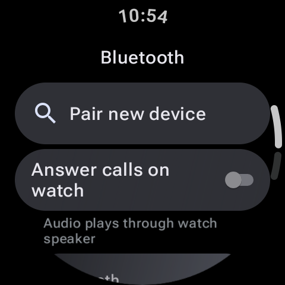

Eine Smartwatch ist nur so smart wie ihre Verbindung. Das nahtlose Erlebnis am Handgelenk, Textnachrichten zu lesen, Wetterwarnungen zu empfangen und Schritte zu synchronisieren, basiert auf einer komplexen, kontinuierlichen drahtlosen Datenkette. Ihre Uhr kommuniziert über Bluetooth mit Ihrem Smartphone, das wiederum mit cloudbasierten Servern synchronisiert wird. Wenn ein einzelnes Glied in dieser Kette bricht, verwandelt sich Ihre Smartwatch in kaum mehr als einen einfachen lokalen digitalen Timer.
Wenn Sie auf Ihrem Zifferblatt ein Wolkensymbol „Getrennt“ bemerken, keine Benachrichtigungen erhalten oder feststellen, dass Ihre Trainingsschritte nicht mit der Fitness-App Ihres Telefons synchronisiert werden können, geraten Sie nicht in Panik. Verbindungsprobleme bei Wear OS kommen häufig vor, lassen sich aber in der Regel leicht beheben. Befolgen Sie diese Schritt-für-Schritt-Anleitung zur Fehlerbehebung, um eine stabile Synchronisierungskette wiederherzustellen.

Schritt 1: Überprüfen Sie den Bluetooth-Status und schalten Sie die Verbindungen um
Es klingt einfach, aber die meisten Verbindungsabbrüche werden durch Bluetooth-Zustandsstörungen auf der Uhr oder dem Telefon verursacht. Starten wir die Verbindung neu:
- Wischen Sie auf dem Bildschirm Ihrer Uhr nach unten, um das zu öffnen Schnelleinstellungen Panel. Überprüfen Sie, ob das Bluetooth-Symbol aktiv ist. Schalten Sie es aus, warten Sie 10 Sekunden und schalten Sie es wieder ein.
- Führen Sie den gleichen Schritt auf Ihrem Smartphone aus: Wischen Sie nach unten, schalten Sie Bluetooth aus, warten Sie und schalten Sie es wieder ein.
- Überprüfen Sie, ob Ihre Uhr versucht, die Verbindung wiederherzustellen. Wenn die Verbindung weiterhin besteht, öffnen Sie die begleitende Watch-App (Galaxy Wearable- oder Pixel Watch-App) auf Ihrem Telefon und klicken Sie auf Verbinden manuell drücken.
Schritt 2: Beenden Sie die Hintergrundbeschränkungen des Telefon-Betriebssystems
Moderne Smartphone-Betriebssysteme (insbesondere die Android-Versionen 12, 13 und 14) verfügen über strenge Batteriemanagement-Algorithmen. Wenn das Betriebssystem entscheidet, dass Ihre Watch Companion-App zu viel Hintergrundenergie verbraucht, wird die App in den Ruhezustand versetzt und der Bluetooth-Synchronisierungsdienst im Hintergrund beendet.
Um dies zu verhindern, müssen Sie Ihre Watch Companion-App von der Optimierung des Telefonakkus ausschließen:
- Öffnen Sie Ihr Telefon Einstellungen > Apps.
- Suchen Sie die Begleit-App Ihrer Uhr (z. B. Galaxy Wearable, Pixel Watch oder Fitbit).
- Klopfen Batterie oder Stromverbrauch.
- Ändern Sie die Einstellung von „Optimiert“ oder „Eingeschränkt“ auf "Uneingeschränkt". Dadurch wird sichergestellt, dass das Telefon den Synchronisierungsdienst kontinuierlich im Hintergrund laufen lässt.
Schnelle Lösung: Bluetooth-Cache löschen
Wenn das Pairing wiederholt fehlschlägt, gehen Sie zu Ihrem Telefon Einstellungen > Apps > System-Apps anzeigen > Bluetooth und tippen Sie auf Cache leeren (Daten nicht löschen, nur zwischenspeichern). Starten Sie anschließend Ihr Telefon neu. Dadurch werden beschädigte Pairing-Handshake-Protokolle gelöscht und Pairing-Schleifen behoben.
Schritt 3: Fehler bei der Zustellung von Benachrichtigungen beheben
Wenn auf Ihrer Uhr „Verbunden“ angezeigt wird, Sie aber keine Benachrichtigungen erhalten, liegt das Problem wahrscheinlich an einer Berechtigungsblockierung. Android erfordert explizit Benachrichtigungszugriff Berechtigungen für tragbare Begleit-Apps zum Lesen und Weiterleiten von Telefonwarnungen.
- Suchen Sie auf Ihrem Telefon nach Einstellungen nach „Geräte- und App-Benachrichtigungen“ oder „Benachrichtigungszugriff“.
- Stellen Sie sicher, dass Ihre Watch Companion-App als aufgeführt ist Erlaubt. Wenn es bereits erlaubt ist, schalten Sie es aus, starten Sie das Telefon neu und schalten Sie es wieder ein, um die Berechtigung zurückzusetzen.
- Stellen Sie außerdem sicher, dass „Bitte nicht stören“ oder „Theatermodus“ sowohl im Schnelleinstellungsfeld Ihrer Uhr als auch auf Ihrem Telefon deaktiviert ist, da diese Modi Benachrichtigungen sofort blockieren.
Schritt 4: Beheben Sie Verzögerungen bei Integrität und Schrittsynchronisierung
Wenn Schritte, Schlafmetriken oder Herzfrequenzdaten auf Ihrer Uhr aufgezeichnet werden, diese jedoch nicht in Gesundheits-Apps (Fitbit, Samsung Health oder Google Fit) auf Ihrem Telefon angezeigt werden, liegt das Problem häufig an einer Verzögerung bei der Datenbanksynchronisierung.
- Öffnen Sie die Gesundheits-App Ihres Telefons (z. B. Samsung Health) und navigieren Sie zu Einstellungen > Mit Samsung Cloud synchronisieren (oder entsprechende Cloud-Einstellungen) und tippen Sie auf Jetzt synchronisieren um einen Datenbank-Push zu erzwingen.
- Wenn Sie Google Fit verwenden, stellen Sie sicher, dass Ihre Uhr bei genau demselben Google-Konto angemeldet ist wie Ihr Telefon. Nicht übereinstimmende Konten sind eine häufige Ursache für Fehler bei der Gesundheitssynchronisierung.
Schritt 5: Der letzte Ausweg: Übertragen oder Zurücksetzen
Wenn Ihre Uhr völlig hängen bleibt und keine Verbindung herstellen kann, müssen Sie sie möglicherweise zurücksetzen. In älteren Wear OS-Versionen war zum Herstellen einer Verbindung mit einem neuen Telefon oder zum Beheben einer fehlerhaften Kopplung ein vollständiger Zurücksetzen auf die Werkseinstellungen erforderlich. Glücklicherweise werden Wear OS 4 und 5 unterstützt Transferüberwachung.
Gehen Sie zu Ihrer Uhr Einstellungen > Allgemein > Uhr auf neues Telefon übertragen. Dadurch kann die Uhr eine Verbindung zu einem neuen Gerät herstellen (oder sich erneut mit einem zurückgesetzten Telefon koppeln), ohne Ihre lokale Datenbank, Einstellungen oder Uhren-Apps zu löschen.
Wenn dies fehlschlägt, fahren Sie mit fort Einstellungen > System > Trennen und zurücksetzen um eine Werkslöschung durchzuführen. Wenn Sie fertig sind, koppeln Sie die Uhr erneut als neues Gerät über die tragbare Begleit-App des Telefons und stellen Sie Ihre Einstellungen aus einem Cloud-Backup wieder her, falls verfügbar.
Den Fluss wiederherstellen
Durch das Umschalten von Bluetooth, das Ausnehmen von Begleit-Apps von Einschränkungen bei der Akkuoptimierung des Telefons und das Zurücksetzen von Benachrichtigungsberechtigungen können Sie 99 % der Synchronisierungsausfälle bei Wear OS beheben. Halten Sie die Firmware Ihrer Uhr und Ihres Telefons auf dem neuesten Stand, leeren Sie Ihren Bluetooth-Cache, wenn Schleifen auftreten, und genießen Sie eine stabile Verbindung an Ihrem Handgelenk!